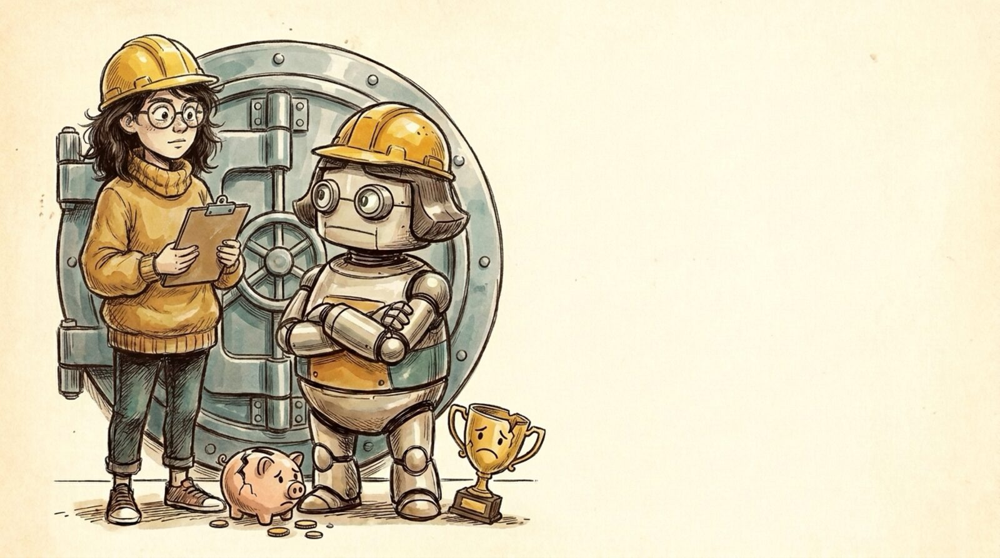

<section id="p12" data-transition="fade" style="background:#f5eee0">
  
  <h1 id="p159eee1aa9e0r0-c63317f9" style="position:absolute; top:288.28px; left:1016.25px; width:1920px; font-family:Arial, sans-serif; font-size:64px; font-weight:700; line-height:1.1; color:#222222">Mission Critical Systems</h1>
  <ul id="p159eee1aa9e0r1-c63317f9" style="position:absolute; top:422.26px; left:calc(50% + 1063.34px); width:1920px; font-family:Arial, sans-serif; font-size:44px; line-height:1.4; color:#222222; transform:translateX(-50%)">
    <li>Don’t lose money</li>
    <li>Don’t lose reputation</li>
    <li>Don’t break trust</li>
  </ul>
  <aside>Unchanged #3: businesses and users need to be safe. Don't lose money, don't lose reputation, don't break trust.</aside>
</section>
